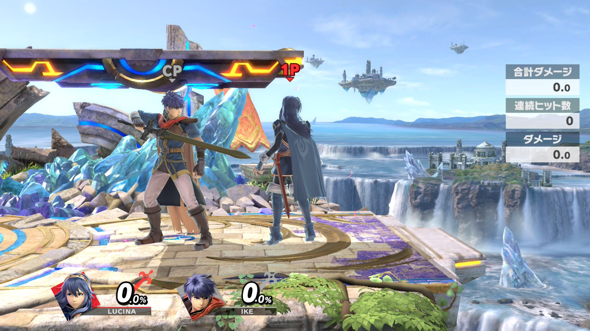

自分は中級者くらいなので、上級者の方にはこの記事は合わないと思います。どうかご了承ください。このセットアップは自分が勝手に思っている狩り方なのでほかにもいい案あれば教えてほしいです。
崖狩りの基本
基本ルキナというキャラクターは着地狩りは強いので、ジャンプ上りはあまり考えなくても大丈夫です。なので、崖や空中から地上に上がらせない意識が大切となってきます。
崖から回避0.5回分の距離に立つ
＊相手が崖に掴まる際
スマブラには崖に掴まる瞬間2F無敵が発生しません。なので、相手が崖を掴まる際はタイミングよく下強を狙うようにしましょう。これが上手くなればリトルマック・ドクターマリオ・クラウドなどそのほかのキャラにも撃墜が狙えます。
※ワイヤー復帰には崖の2Fは
多択を潰す「置き空N」
空Nを振ることで、「ジャンプ上がり」を空中で叩きつつ、「その場上がり」にも攻撃を引っ掛けることができる万能な選択肢です。
もし空Nがその場上りの無敵で当たっていなくても、着地後に「微歩きつかみ」を狙うことで、展開を維持できます。また、回避上がりが長いキャラ・姿勢が良いキャラ以外には、そのまま「空後」や「つかみ」で移動先を咎めることも可能です。
空Nを振った後は、相手の癖に応じてガードを仕込みましょう。攻撃上がりや崖離し攻撃をガードできれば、「上B（ドルフィン）」や「スマッシュ」反撃ができます。
※崖に掴まりっぱなしの相手には、「横スマッシュ」が刺さります。
ジャンプ上りが多い相手への対処
大ジャンプ空後→空前・空N(1段目)が有効です。相手を外に出して復帰阻止展開に持っていけます。この技を振り終わった後の①の崖狩りに持っていけばいいです。
私が意識している配分は基本20％その場、ジャンプ上り・攻撃上がり10%ずつ・回避上がり60%くらいの意識で狩るようにしています。空Nを置くことによりその場と回避上がりだけに意識を集中させています。崖離し攻撃が強いキャラクターは距離をとるようにしましょう。
着地狩りの基本
ルキナの空上は判定が大きく、着地狩りがとても強いです。相手の回避を誘ってから仕留める「待ち」の意識も重要になってきます。 空上を振った後に回避されてもつかみや上Bなどでダブルマークナルを狙えます。
空上での着地狩り
＊技の置き方ルキナは相手に攻撃を当てるイメージで技を振るのではなく、相手が出てきた際にあたる場所で技を振ることが大切です。集中力が切れてきたり、焦ってしまうとこのことを忘れがちなので気をつけましょう。
💡対戦開始時のポイント基本は「空上」や「上強」などで相手の着地を狩ります。最初に空上を狙う展開ではあえて攻撃せずに待ってみて相手の行動がジャンプか回避かを確認して癖を確かめるのが良いです。基本、VIPは最終局面で癖が出やすい印象があります。なので、最終ストックの同じ場面になった場合、その相手の癖に合わせて技を置くのが強いです。
ルキナは堅実に戦うだけでは一先のオンラインでの壊しキャラなどに安定して勝つことが難しいです。着地狩りで回避・暴れ読みスマッシュで早期撃墜をすることや空上だけに頼らず崖外に出せる技を狙い早期撃墜を狙うのも一つの手になってきます。